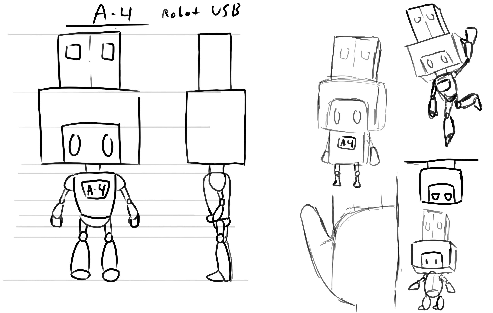
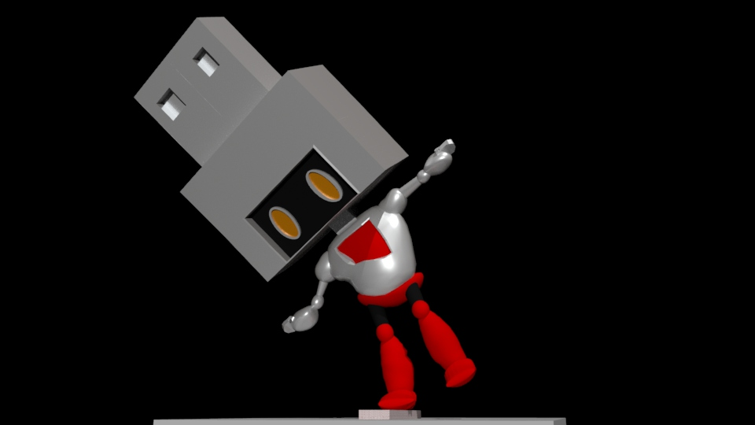
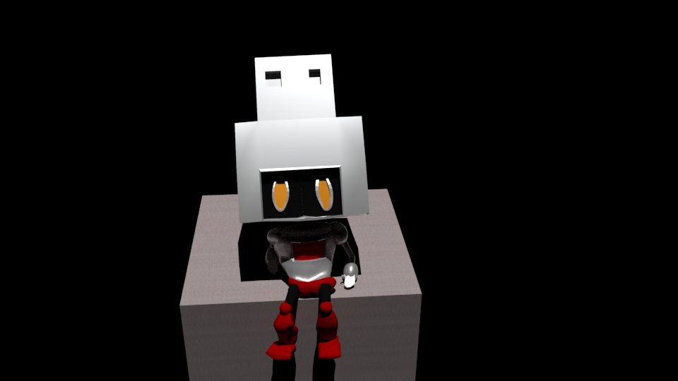

"Mess up once, it looks ugly. Mess up many times, then it becomes your style" - unknown



A4 is a USB-Robot I made during my time at De Anza. I designed it using adobe photoshop and modeled the whole body using maya. This is the first character I ever modeled, rigged, and rendered. Some features, like it's USB head, are purposefully not symmetrical as I believed it would look more stylized to keep true to my original design. In reality, I envisioned the robot's size to be small like an actual USB and one day plan to 3D print it.